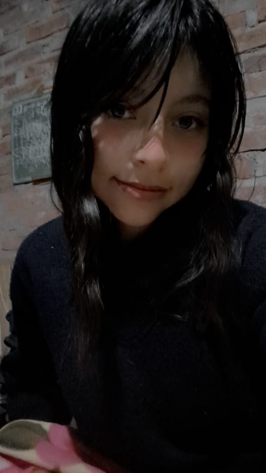
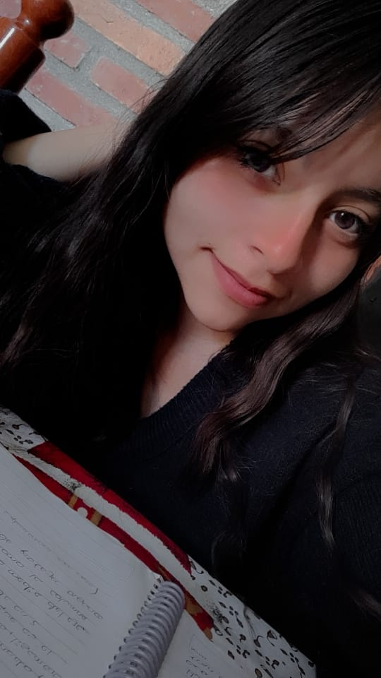
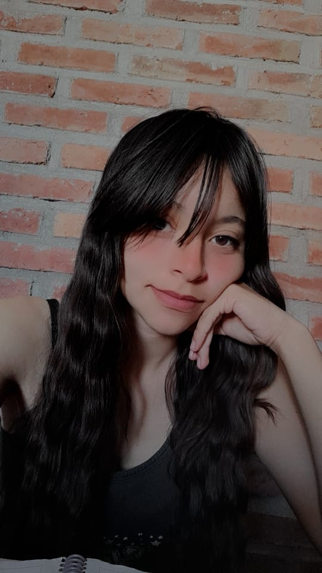
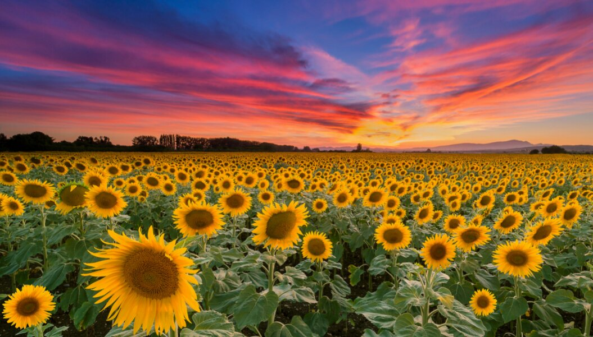

Querida Selena,
Hoy quiero expresarte lo especial que eres para mí a través de esta página web la cual no es mucho pero queria hacer algo en mis ratos libres. Eres más que una amiga, eres como mi hermanita pequeña aunque ya estes mas vieja que yo jajaja por que a pesar de siempre estar en lo mismo y que casi ni hablamos aveces se que puedo contar contigo para mejorar y quiza los dos estemos tan dañados que llegamos a entender las babosadas del otro pero a pesar de todos los malos e incluso buenos de mi vida me alegra mucho el aver coincidido con vos y poder conocer a una de las personas mas geniales de este mundo, sabes que TKM y casi siempre lo digo que eres mi mejor amiga y que te agradezco por lo mucho que me has apoyado hasta ahora por eso queria hacer esto y aunque es algo sencillo y facil de hacer creo que te debo eso y mucho mas.
Pero bueno hoy he venido hablar de vos no de mi jajaja bueno aver empezemos al principio apenas te conoci te me hiciste super buena onda por que literal demostrabas lo que eres desde el inicio, una chica alegre y de muy buenos sentimientos, la verdad eres una persona maravillosa que ha pasado por muchas cosas malas y que a pesar de eso sigues adelante quiza no sea facil ni mucho menos te quedaran pero solo quiero que sigas adelante confio en que eres fuerte y podras con todo eso tienes personas que te adoran y te necesitan asi que se fuerte bro quiza no seas muy expresiva y por eso casi nunca se nota que estas mal pero si quiero decirte que puedes confiar en mi te apoyare tanto como tu lo haces conmigo, quiza te pones a pensar y no es mucho pero intentare hacerlo lo mejor que pueda
Pero aver vengo hablar de lo genial que eres por que para mi eres un ejemplo a seguir claro no en todo jajajaja por que aveces haces unas pelotudeces que es mejor darte una piña por pendeja jajaja y la eres una chica ni que decir juro que no existen palabras exactas para describirte osea no jodas no necesitas maquillaje para verte bien,eres inteligente a tu manera nunca te quejas al ayudar alguien y no dudes de que quien se case contigo se estaria ganando algo mas que la felicidad, osea es algo indescriptible tu forma de ser eres realemente una en un millon, eres la estrella mas chida entre todas las que hay si no mira nada mas estas fotos de modelo jaja.
  Esa cara de fumadora jajaja sales bien bro viste eres famosa ahora estas en internet na mentira jaja pero quiero que sepas que te quiero mucho y te aprecio bastante lo importante es salir adelante y no rendirse bro, algun dia ya nos veremos y al menos ahi te podre apoyar aunque sea con una piña en la cara jaja ok not pero espero estes bien, que mejores si estas mal y si estas enferma que te cuides mejor bro, espero nuestra amistad dure mas que una simple vida efimera
y la verdad aunque las palabras a veces no son suficientes para expresar lo que siento, quiero que sepas que eres una persona increíble y que estoy agradecida por tenerte en mi vida.Te aprecio más de lo que las palabras pueden expresar.
Bueno no quiero hacerla mas larga por que si no esto demoraria un monton jaja
Hago esto con todo el cariño que un bro puede albergar en su vida, tkm mucho Doña Patrona Del Mal jajaa
Para Ti
A: Adrian CC